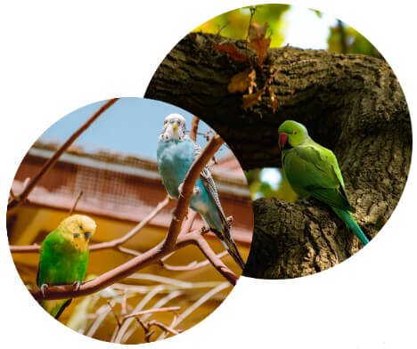
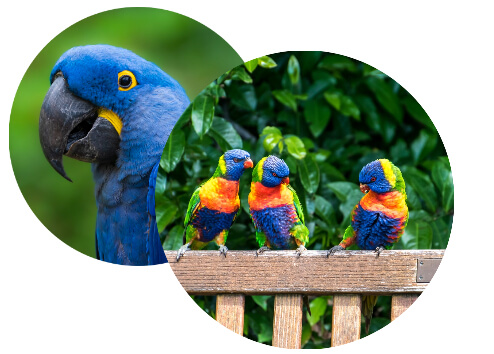

De mest populära arterna
Här nedan kan du lära dig mer om de mest populära och älskade arterna! Allt från små och söta till stora och majestätiska papegojor!
Undulater
Små och sötaUndulat (Bugdie)
Medellivslängd: 5-10 år
Ursprung: Australien
Längd: 15-20 cm
Egenskaper: Väldigt sociala och älskar uppmärksamhet
Cockatiel
Vacker sångCockatiel (Nymfkakadua)
Medellivslängd: 10-20 år
Ursprung: Australien
Längd: 28-35 cm
Egenskaper: Sociala, älskar att härma ljud och vackra vokaliseringar
Parakit
RoligaParakit (Conure)
Medellivslängd: 12-30 år
Ursprung: Syd-och Centralamerika och Mexiko
Längd: 20-30 cm
Egenskaper: Roliga, enkelt tränade, nyper och biter mycket
Lovebird
Nyfikna
Lovebird (Fischers dvärgpapegoja)
Medellivslängd: 10-20 år
Ursprung: Centralafrika
Längd: 13-18 cm
Egenskaper: Sociala, nyfikna och högljudda
Ara
Exotiska
Ara (Macaw)
Medellivslängd: 40-50 år
Ursprung: Centralamerika och Sydamerika
Längd: 60-100 cm
Egenskaper: Lefulla, aktiva och mycket tillgivna
Gråjako
Intelligenta
Gråjako (African gray)
Medellivslängd: 15-23 år
Ursprung: Centralafrika
Längd: 25-33 cm
Egenskaper: Mycket intelligenta, ödmjuka och sociala
Amazon
Pratglada
Amazonpapegoja (Amazon parrot)
Medellivslängd: 50-80 år
Ursprung: Central-och Sydamerika
Längd: 28-30 cm
Egenskaper: Lekfulla, extroverta och pratglada
Vitbuk
Energetiska
Vitbuk (Caique)
Medellivslängd: 30-40 år
Ursprung: Sydamerika
Längd: 20-23 cm
Egenskaper: Energetiska, små och nyfikna
Fakta om papegojor
Papegojor är med i släktet papegojfåglar eller vetenskapligt kallat Psittaciformes, som inkluderar mer än 402 papegojarter som till exempel parakiter, kakaduor och lovebirds. Även om det finns många typer av papegojor har alla papegojarter några gemensamma drag. För att till exempel klassificeras som en papegoja måste fågeln ha en böjd näbb och fötterna måste vara zygodactyl, vilket innebär att det finns fyra tår på varje fot med två tår som pekar framåt och två som pekar bakåt.
Häng nu med på resan och lär dig mer om papegojor nedan!
Allmän fakta
I USA är papegojan det tredje mest populära husdjuret och i Sverige ligger papegojan på femte plats. De är exotiska fåglar och lever ursprungligen i regnskogen och öknen, men idag lever de flesta med människor. Det finns över 400 olika arter av papegojor över hela världen, från regnskogarna i Sydamerika och öarna i södra Stilla havet och Karibien, till öknarna och grässlätterna i Australien och Afrika. Vissa papegojor, som kakapo, är nattliga. De sover under dagen och letar efter mat på natten.

Papegojor är mycket färgglada djur som kommer i alla möjliga olika färger och färgkombinationer. De har ett stort huvud, kort nacke och deras fötter är väldigt starka med två tår framåt och två tår bakåt.
De är mycket sociala, lekfulla och behöver leva med flera papegojor eller få mycket uppmärksamhet från sina ägare för att må bra. De är väldigt smarta djur- papegojor kan inte bara lära sig att säga ord och härma ljud utan kan även associera dem med föremål och situationer. Forskare uppskattar papegojornas logikutveckling till att vara lik en femårig människas.
Många arter är monogama och tillbringar sina liv med bara en partner. Partnerna arbetar tillsammans för att uppfostra sina ungar. Papegojor i hela flocken kommunicerar med varandra genom att pipa och röra sina svansfjädrar.
Ursprung och förekomst
De flesta vilda papegojorna lever i de varma områdena på södra halvklotet, även om de finns i många andra regioner i världen, såsom norra Mexiko, Australien, Sydamerika och Centralamerika. Inte alla papegojor gillar varmt väder. Vissa papegojor gillar att bo i snöiga klimat. Några papegojor som föredrar kallt väder och klimat är tallparakiten, den tjocknäbbade parakiten och kean.
Med sin färgglada fjäderdräkt och förmåga att efterlikna mänskligt tal är papegojor mycket populära husdjur. En del papegojor har lyckats rymma från sina ägare och det har därför fötts upp papegojor i ovanliga områden. Till exempel är en populär fågel i husdjurshandeln, munkparakiten, som normalt bor i det subtropiska Sydamerika, nu bosatt i USA efter att några av dem flytt och därefter har reproducerats i naturen.
Beteende och personlighet
Papegojor är vilda djur. Även handuppfödda fåglar är inte riktigt tama, och tidig socialisering är viktigt. Det är dock inte nödvändigt att handmata en fågel för att binda sig till den. I själva verket är det inte rekommenderat att man köper en bebis-bfågel som fortfarande kräver handmatning. Fåglar förstår inte riktigt begreppet "ägare och husdjur". Istället närmar de sig människorna i sitt hushåll som om de är en del av flocken. Inom flocken kommer fåglar att försöka få en dominerande ställning. Ägare måste sträva efter att etablera sig som flockledare.
Papegojor är mycket sociala. I naturen håller papegojor kontakten med kontaktsamtal. Var noga med att hälsa på din papegoja när du först kommer hem och säga adjö när du lämnar rummet. Ge också mjuka, enkela svar på kontaktsamtal. Papegojor ger enstaka kvittrande, och ett kort svar som "Hej, hur mår du?" från dig skulle vara bra och göra papegojan glad!
Livslängd
Papegojor är speciella bland sällskapsfåglar eftersom många arter har potential att vara med en hela livet. De lever också ofta längre än sina ägare då de kan bli över 80 år gamla!
Papegojor lever vanligtvis längre i fångenskap än i naturen eftersom de är mindre benägna att stöta på rovdjur och sjukdomar när de bor i ett hem. Det betyder dock inte att de är undantagna från sjukdomar och förkortade livslängder.
Vikt
Papegojor varierar avsevärt i storlek beroende på art. Den genomsnittliga vikten varierar från 6 gram till 2 kg.
Den lättaste papegojan är den dvärgspettpapegojan, som bara väger 3 gram. Däremot är kakapo den tyngsta papegojan, som väger mellan 2 och 9 kg. En papegojas vikt bestäms främst av dess genetik, kost, motion och livsmiljö.
Längd
Eftersom papegojsläktet innehåller så många olika arter varierar papegojstorlekarna mycket. Papegojor kan variera i storlek från cirka 8,7 centimeter till 100 centimeter.
Den minsta papegojan är liksom den lättaste papegojan dvärgspettpapegojan, som blir runt 8 centimeter lång och den längsta papegojan är liksom den tyngsta papegojan kakapo som blir runt 65 centimeter lång.